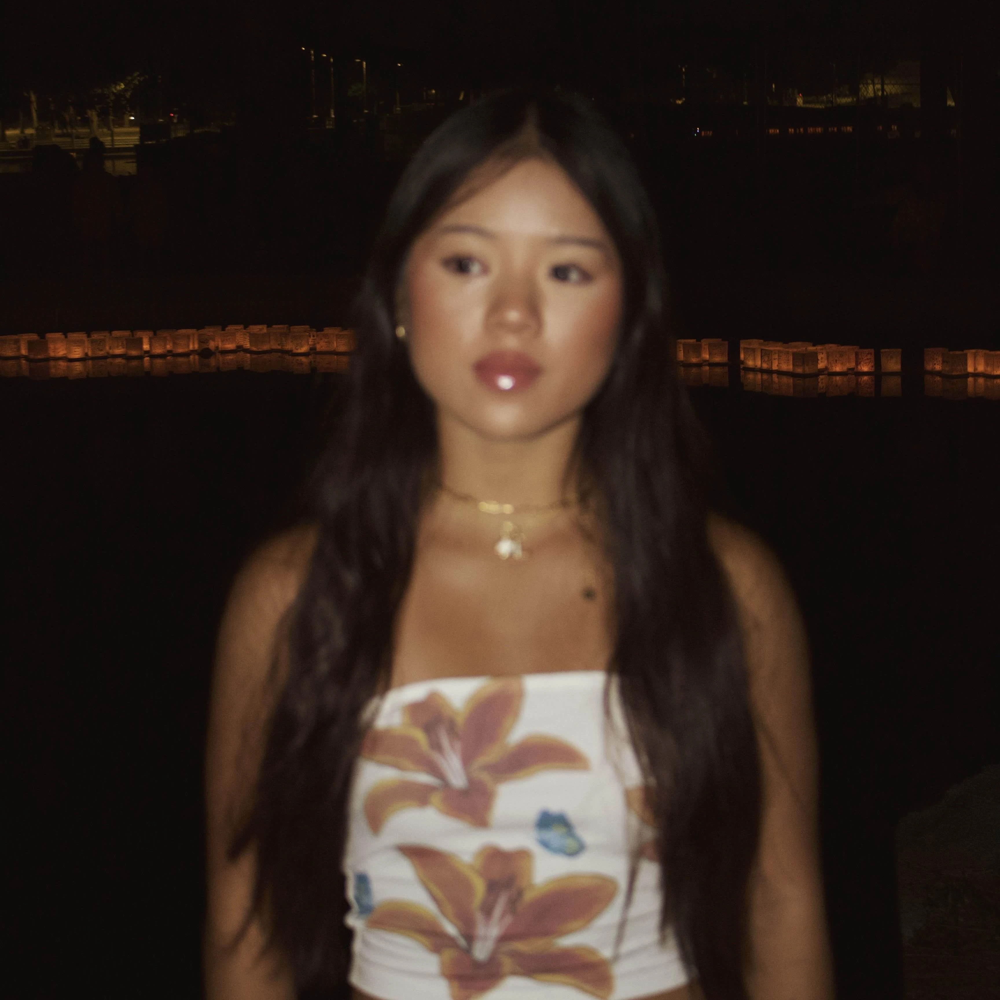

When I was younger, I wanted to be everything: teacher, doctor, firefighter, optometrist, etc. The problem was, I never really focused on school.
All I did was play video games and didn't care about learning anything, which is why my teachers considered me “slow.” Even though my video game addiction set
me back in my education, it doesn't really matter because in the end, I was able to catch up through years of relearning, failure, and discipline. And honestly,
if it weren't for my love of video games, I probably never would've tried making my own game on Roblox, which ended up being the start of my interest in coding.
I don't want you to think that coding is the only thing I have going on in my life, every other hobby I have clearly contributes to who I am today and how I was able to become the
person I am. I've been going to the gym since 2023, and the only time I was inconsistent was during my first year of college, second semester, because I was struggling to balance
classes, my first job, real friendships, and my first relationship.
I love the gym and eating healthy, so most people would call it a lifestyle, but I like to call it a hobby as well! I also love listening to classical music and playing the
violin. I wish more people appreciated instruments and could experience how beautiful they can sound. Reading books wasn't really my thing until my late teens, when I randomly became interested in space.
All of these hobbies shaped who I am today. Going to the gym taught me discipline, even when I was exhausted. Relearning the violin taught me perseverance, even though
I'm not as good as I used to be, I'm determined to master it because it's too beautiful to give up on, and it fulfills my younger self's dream of returning to the
instrument one day. Reading was tough at first, if a book wasn't fun I hated it. I sucked at reading and didn't enjoy it, but my curiosity about the ocean, history,
geography, and space pushed me to keep at it. Over time, reading went from a hassle to a relaxing way to learn things I never knew before. Through it, I developed a
growth mindset that's helped me tremendously in my courses, especially calculus.
I have a lot of other interests I want to explore, like scuba diving, whale watching, swimming with marine animals, learning other instruments, and soon I will finally start
snowboarding, something I've been dreaming about for a long time.
There's so much to experience in life, and I'm grateful to be alive today. I'm proud of the person I've become, and I hope my presence can inspire others to be more optimistic
and, one day, allow me to mentor others.